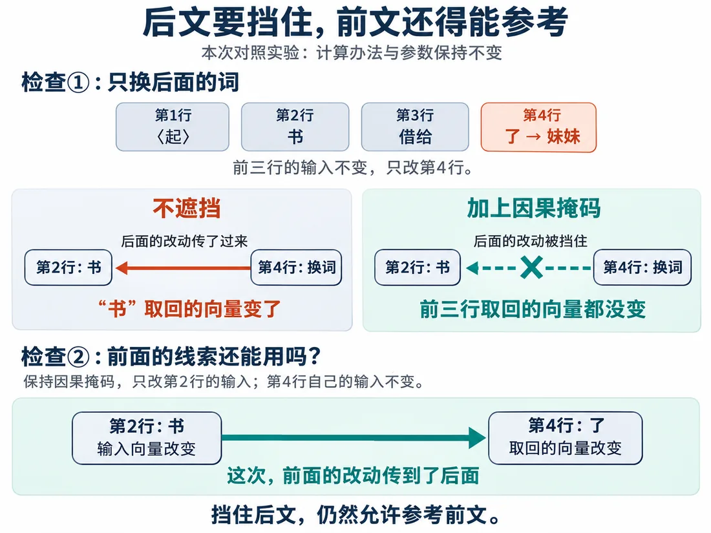

我们在这儿
上一篇搭完了编码器，读懂人话的路有了，可还得琢磨怎么让电脑说人话。先试个容易准备的办法：拿现成的完整句子出接龙题。
这一篇要解决给回答加因果掩码，保证生成时只能看前面的内容。
大概阅读约 10–13 分钟
父母教孩子说话，常说前半句，让孩子接后面的词。电脑也照这个办法续写。
真接着写时，后面的词还没出来，自然用不上。
拿完整句子练习，也得守同一条规矩：每个位置只能用当前位置和前面已经给出的文字。
练习时偷看后文，真写时却没有这条线索。练的就不是续写本事。
先写一句短话：书｜借给｜了｜妹妹。给一段开头，让它预测紧跟的下一个 Token，这段开头叫前缀。
同一句短话，可以从不同位置出题：
第一个词前面什么都没有，就在最前面放一个特殊标记〈起〉。
它有自己的编号和向量。电脑从这组数开始猜第一个词。
最后写出来的话里，看不到〈起〉。
这么一句四块的短句，出了四道接龙题。这也埋下隐患：前三道题的答案，正好是后面题目要用的文字，放一起算，会不会被提前看见？
把〈起〉、书、借给、了依次排成四行。每行算自己的 q、k、v。
麻烦在第二行：
如果还照自注意力查整张表，“书”往下一看就能瞄到答案。
先瞄一眼再答，就不用研究语言规律了，研究视力就够了。
四行要一起算，但每行不能把后面的答案取回来。
像拿一张纸挡住。
第 i 行只准看第 1 到第 i 行，包含自己。
允许读取的位置，正好组成一个下三角。右上方全挡住。
这套规则叫掩码。
位置号管“排第几”。掩码管“这回准看哪几”。
想挡住，不能把分数填 0。
因为 softmax 第一步 e0＝1，它仍会分到权重。
要把盖住的格子写成 −∞。取指数后是 0，就分不到任何权重。
遮挡要在送入 softmax 之前完成。
已经写出来的内容，能影响后续。
没生成的内容，不能反过来给前面传信息。
这叫因果掩码。
对照验证：
这样练习和真写的规矩就对上了。
先在电路板上看遮挡怎么生效。再用下三角网格，逐行确认哪些位置能看。
网格确认后，再做前后对照：后面的内容变了，前面的结果不跟着变。

这一篇收个尾
这一篇拿到：因果掩码，回答每一行只能看自己和前面。
下一篇接着看：让回答回查原句资料。